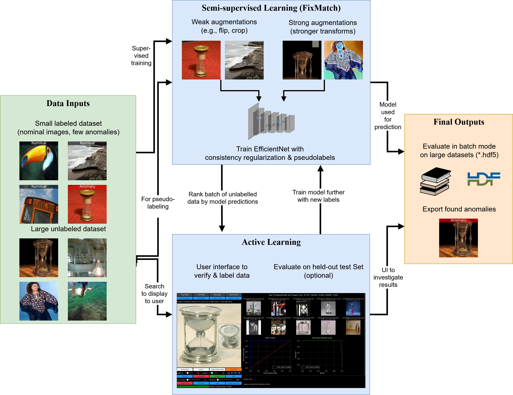
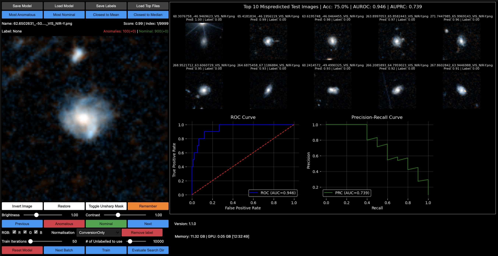
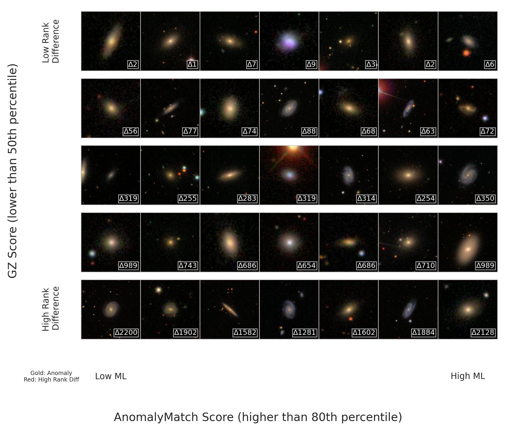
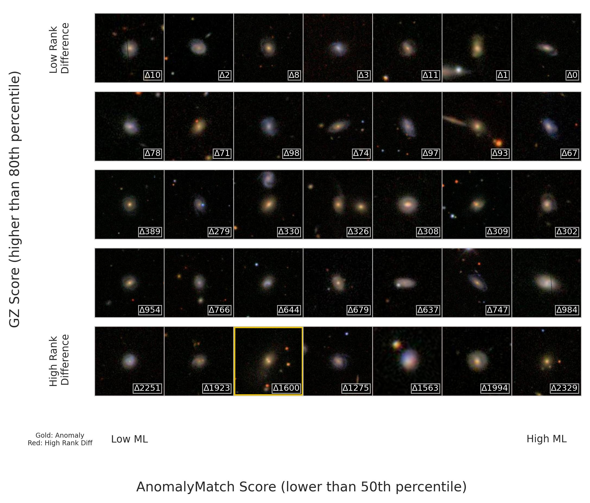

Method¶
AnomalyMatch combines the semi-supervised FixMatch algorithm with active learning to detect anomalies starting from as few as 5-10 labeled examples.
For full details, see the paper: AnomalyMatch: Discovering Rare Objects of Interest with Semi-supervised and Active Learning (Gomez et al., 2025).

Semi-supervised Learning with FixMatch¶
AnomalyMatch treats anomaly detection as binary classification ("normal" vs "anomaly") under severe class imbalance. The key insight is leveraging large amounts of unlabeled data alongside a small labeled set through FixMatch's consistency regularization.
Augmentation Strategy¶
FixMatch applies two levels of augmentation to unlabeled images:
- Weak augmentations: Minor transformations (horizontal flips, slight random crops) that preserve image content — used to generate reliable pseudo-labels
- Strong augmentations: Aggressive transformations including rotations, colour distortions, sharpness variations, shearing, and posterisation — used to train the model to be invariant
Pseudo-labels and Consistency Regularization¶
- An unlabeled image receives a weak augmentation and is passed through the model
- If the predicted probability exceeds a confidence threshold (default: 0.95), a pseudo-label is assigned
- The same image receives a strong augmentation and is passed through the model again
- The model is trained to match its prediction on the strongly-augmented image to the pseudo-label
This enforces prediction consistency across transformations, enabling the model to learn from unlabeled data.
Loss Function¶
The total loss combines supervised and unsupervised components:
L = L_sup + L_unsup
- L_sup: Binary cross-entropy on the labeled data
- L_unsup: Consistency loss between pseudo-labels (from weak augmentation) and predictions (from strong augmentation)
Dual-model Architecture¶
AnomalyMatch maintains two copies of the network:
- Train model: Updated via backpropagation
- Eval model: Updated via exponential moving average (EMA) of the train model's weights (momentum = 0.99)
The EMA model produces more stable predictions and is used for inference and pseudo-label generation.
Active Learning Loop¶
The active learning cycle allows iterative refinement with minimal human effort:
- Train the model on the current labeled set + unlabeled data (semi-supervised)
- Predict anomaly scores on all unlabeled data
- Review the top-ranked predictions in the interactive UI — verify discoveries and correct false positives
- Retrain with the expanded labeled set
- Repeat for 2-3 cycles
The number of labels added per cycle is entirely up to the user — the model improves with each additional label.

Results¶
Benchmark Performance¶
Starting from just 5-10 labeled anomalies and after 3 active learning cycles:
| Dataset | AUROC | AUPRC | Top 1% Precision |
|---|---|---|---|
| miniImageNet (1% anomaly ratio) | 0.96 | 0.82 | 76% |
| GalaxyMNIST (25% anomaly ratio) | 0.89 | 0.77 | 94% |
| Galaxy Zoo (0.9 voter threshold) | 0.91 | 0.17 | 25% |
Anomaly Discovery on Galaxy Zoo¶
The figures below show AnomalyMatch scores vs Galaxy Zoo citizen science scores after 3 active learning iterations on the Galaxy Zoo dataset. Gold borders indicate true anomalies, and the rank difference (delta) shows how much AnomalyMatch's ranking differs from the crowd-sourced ranking.
High anomaly scores (top predictions) — the model identifies visually distinctive galaxies:

Low anomaly scores (bottom predictions) — the model correctly assigns low scores to common galaxy morphologies:

Key Findings¶
- 100 iterations per cycle is optimal — more iterations lead to overfitting on the small labeled set
- Performance is robust across 100-1000 initial labels with diminishing returns beyond 500
- A weighted random sampler addresses class imbalance by oversampling the minority (anomaly) class
- ImageNet-pretrained EfficientNet backbone provides strong transfer learning for both natural and astronomical images
Citing AnomalyMatch¶
If you find AnomalyMatch useful in your research, please cite:
@article{gomez2025anomalymatch,
title={AnomalyMatch: Discovering Rare Objects of Interest with Semi-supervised and Active Learning},
author={G{\'o}mez, Pablo and Ruhberg, Laslo E. and Nardone, Maria Teresa and O'Ryan, David},
journal={arXiv e-prints},
year={2025},
month={5},
doi={10.48550/arXiv.2505.03509},
url={https://arxiv.org/abs/2505.03509}
}